Multisite & Multinetwork
How it can help you and how you can help it
- Multisite Introduction, Benefits, Use Cases, Setup
- Multinetwork Introduction, Benefits, Use Cases, Setup
- Developer Best Practices History, Issues, Plugins
- Gist
Multisite Introduction
Multisite Introduction
Multisite Benefits
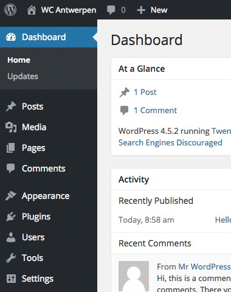
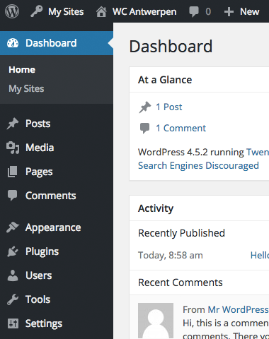
- easy update management without a third-party tool
- sites can interact with each other directly (without a remote request)
Multisite Benefits
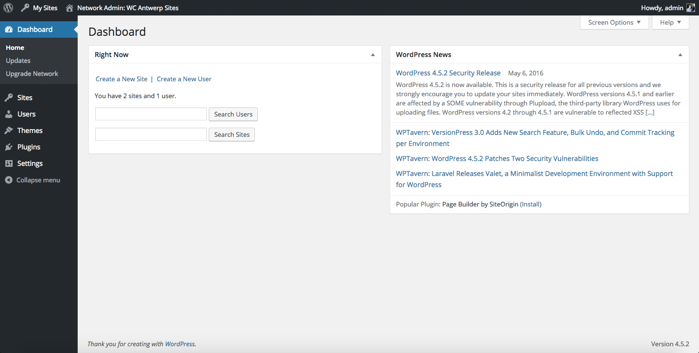- common user management across the entire multisite
- sites can have their individual admins while a network admin has control over the entire network
Multisite Benefits
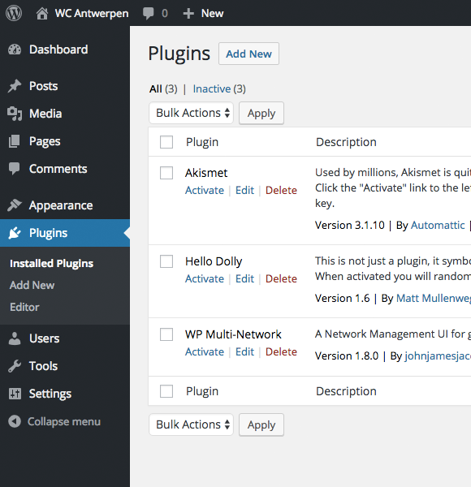
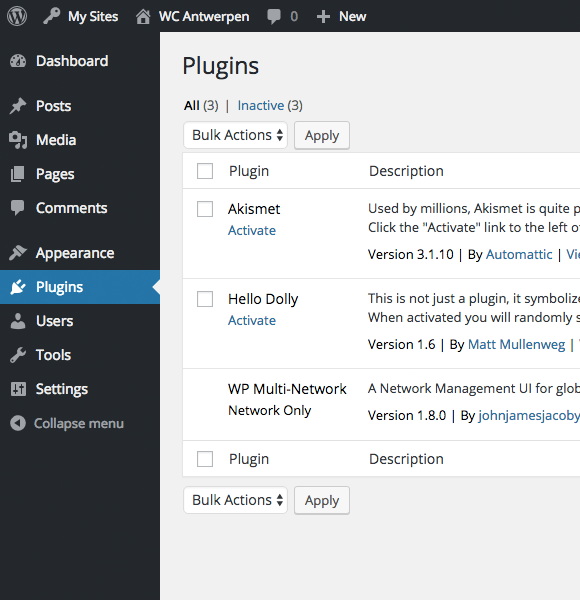
- plugins can be network-activated (so that they run on all sites)
- better user capabilities: network administrators manage plugins and themes while regular admins still have access to everything else
Multisite Use Cases
- outsourcing parts of a website (for example blog.example.com)
- managing clients that have multiple websites
- hosting client sites in one WordPress installation
- running a social network where users can create their own sites
Multisite Use Cases
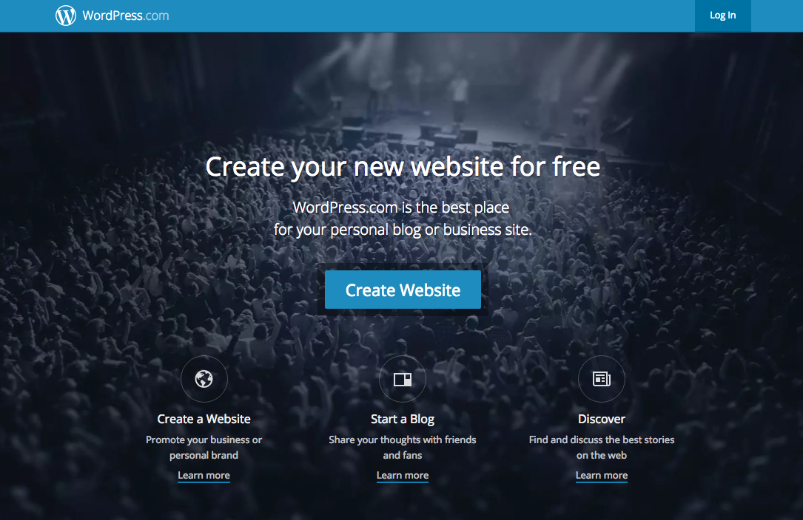Multisite Setup
https://codex.wordpress.org/Create_A_Network
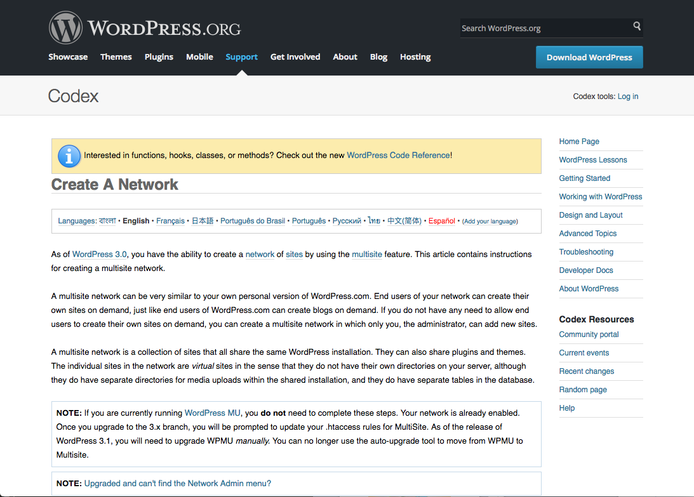
Multinetwork Introduction
Multinetwork Introduction
Multinetwork Benefits
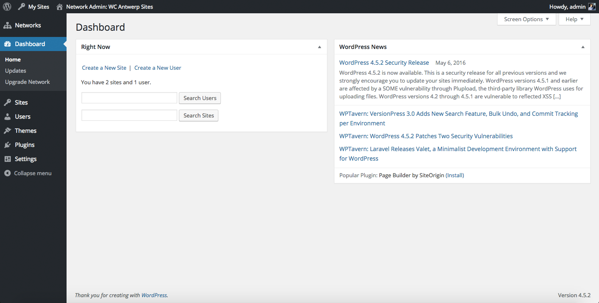Why not just have a multisite?
Multinetwork Benefits
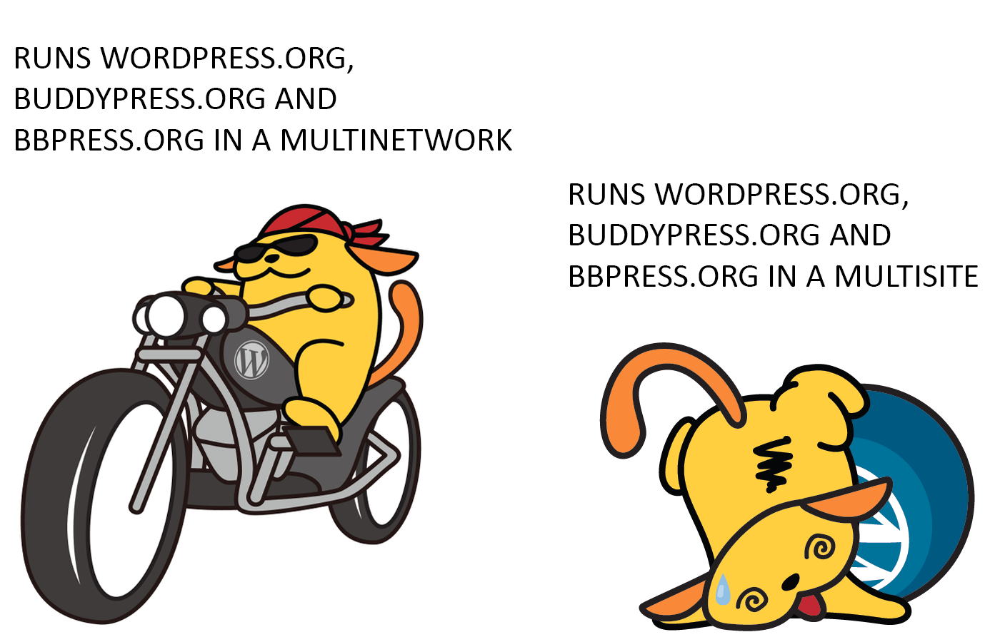BECAUSE WAPUU SAY SO.
Multinetwork Benefits
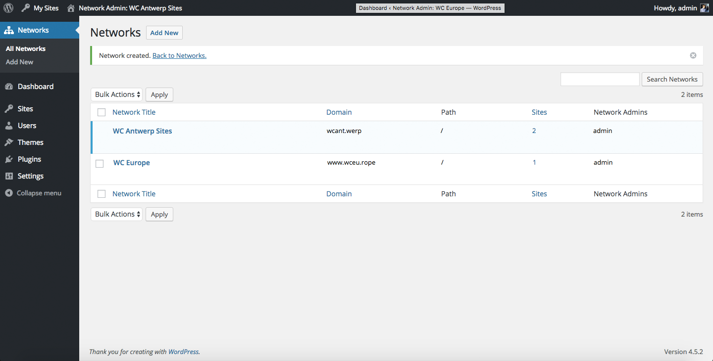- sites can be separated into groups of sites
- each network can have individual network admins, network-activated plugins etc.
Multinetwork Use Cases
Multinetwork Use Cases
Multinetwork Setup
https://wordpress.org/plugins/wp-multi-network/
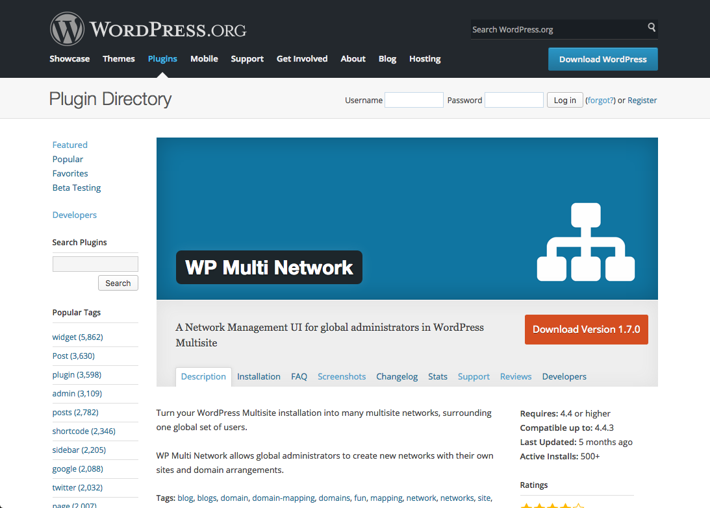
Developer Best Practices History
- WordPress was not invented with Multisite and (especially) Multinetwork in mind
- Multisite started as „WordPress MU“ and was merged into WordPress Core in version 3.0 (see https://mu.wordpress.org/)
- therefore some things are not solved in an optimal way
Developer Best Practices History
| Old naming conventions | Current naming conventions |
|---|---|
| Blog | Site |
| Site | Network |
-
because of backwards compatibility, these naming conventions are used interchangeably in WordPress Core
- everything new uses the current conventions
- old code uses the old conventions

Developer Best Practices Issues
- when working with Multisite / Multinetwork, you might encounter minor issues or features you‘re missing (but everything can be fixed)
-
methods to fix these:
-
write a must-use plugin or create your own
sunrise.php(short-term solution) - contribute to WordPress Core and actually fix it at its base (long-term solution)
-
write a must-use plugin or create your own
Developer Best Practices Issues

-
a site like
www.example.comis not properly redirected to when enteringexample.com - the URL scheme is also not considered for possible redirections (HTTP vs HTTPS)
Developer Best Practices Issues
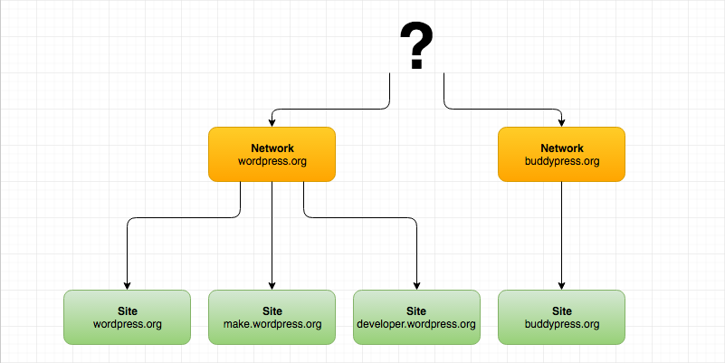- What is the next step in the hierarchy, beyond networks? There is none.
- Any network admin can create new networks which is usually undesirable.
Developer Best Practices Issues
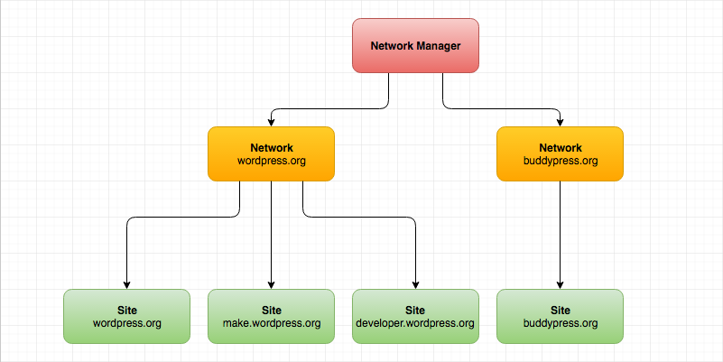- Idea: a network manager (or global admin)
Developer Best Practices Issues
https://github.com/felixarntz/multisite-fixes
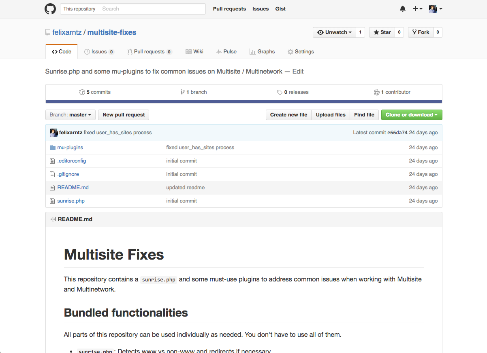
Developer Best Practices Plugins
Don't keep Multisite and Multinetwork out!
Supporting them in your plugin is very easy.
(usually it's only about activation/deactivation/uninstallation routines)
Developer Best Practices Plugins
function myplugin_activate( $network_wide ) {
myplugin_install_table();
}
Bad Example: Multisite is not handled at all.
Developer Best Practices Plugins
function myplugin_activate( $network_wide ) {
global $wpdb;
if ( $network_wide ) {
$site_ids = $wpdb->get_col(
"SELECT blog_id FROM $wpdb->blogs"
);
foreach ( $site_ids as $site_id ) {
switch_to_blog( $site_id );
myplugin_install_table();
restore_current_blog();
}
} else {
myplugin_install_table();
}
}
Bad Example: Multisite is handled, but Multinetwork is ignored.
Developer Best Practices Plugins
function myplugin_activate( $network_wide ) {
global $wpdb;
if ( $network_wide ) {
$site_ids = $wpdb->get_col(
"SELECT blog_id FROM $wpdb->blogs WHERE site_id = $wpdb->siteid"
);
foreach ( $site_ids as $site_id ) {
switch_to_blog( $site_id );
myplugin_install_table();
restore_current_blog();
}
} else {
myplugin_install_table();
}
}
Good Example: Multisite and Multinetwork are handled.
Gist
- if this session got you interested, I‘d love for you to start playing around with Multisite (and Multinetwork)
- if you‘re a plugin developer, please make sure your code runs properly on Multisite/Multinetwork
- if you find issues with Multisite, consider contributing to the Multisite component in WordPress Core – it is a pretty small team, so your help will be much appreciated
- if you find issues with Multinetwork, consider helping out with the WP Multi Network plugin
Thank you!
Felix Arntz
Plugin Developer / Core Contributor / Freelancer